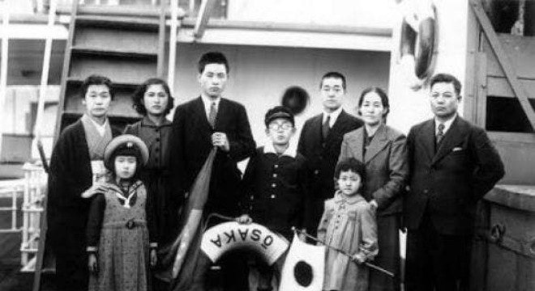

A Lady Fashion é a maior empresa de comércio eletrônico no segmento de moda na América Latina. Fundada em 1962, possui filiais em 8 países, sendo líder de mercado com mais 91% de participação em 7 deles.
O centro de distribuição fica em Ribeirão Preto, em São Paulo. De lá, saem dezenas de caminhões que distribuem nossos produtos às casas de nossos clientes. Veja abaixo uma foto do nosso centro de distribuição
Compre suas roupas e acessórios na Lady Fashion. Acesse nossa loja ou entre em contato se tiver dúvidas. Conheça também nossa história e nossos diferenciais.
A fundação em 1962 ocorreu no momento do crescimento econômico no interior de São Paulo. A família Takeshi, tradicional da região, investiu todas as suas economias nessa nova iniciativa, revolucionária para a época. O fundador Oma Takeshi, dotado de particular visão administrativa, guiou os negócios da empresa durante mais de 40 anos, muitos deles ao lado de seu filho Toya, atual CEO. O nome da empresa é inspirado em sua esposa que sempre se vestiu de forma elegante.
O crescimento da empresa foi praticamente instantâneo. Nos primeiros 5 anos, já atendia 4 países. Bateu a marca de 8 países em apenas 6 anos de existência. Até hoje, já atendeu 740 milhões de usuários distintos, em bilhões de diferentes pedidos. O crescimento em número de funcionários é também surpreendente. Hoje, é a maior empregadora do Brasil, mas mesmo após apenas 5 anos de sua existência, já possuía 30 mil funcionários. Fora do Brasil, há 240 mil funcionários, além dos 55 mil brasileiros nas instalações de Ribeirão Preto e nos escritórios em todo o país. Dada a importância econômica da empresa para o Brasil, a família Takeshi já recebeu diversos prêmios, homenagens e condecorações. Todos os presidentes do Brasil já visitaram as instalações da Lady Fashion, além de presidentes de outros países da América Latina
Compre já em nossa Loja!
@Copyright Lady Fashion